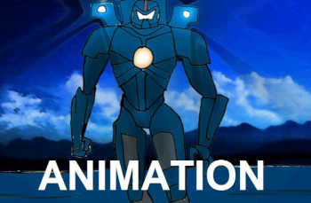
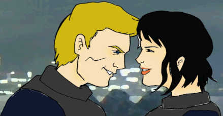

Hobbies & Interests:
Computers & Games
This page only contains a few images of my computer experience, as I have not been able to capture more screens. As the site grows I will add more images to this page.
One of the things I enjoy working (and playing with) are computers. Much of my time is spent using one for work or recreation, and I also enjoy using the machines to play games. Computer and video games have been a part of my life since I was in elementary school, and I still like to play them as an adult.
Despite the criticisms of having such a hobby, I got to be more aware of how game apps and programs utilize the data files stored in the computer, such as models and textures and the way scripts work. Perhaps having a hobby like this will lead to me to work with actual programs and do some coding to make things work within the system.
Below left: I enjoyed playing video games since I was a child, and my PlayStation 2 is the oldest game console I own.
While taking my undergraduate Art Studio courses at UC Davis, I worked on computer animation programs to create moving illustration on a 2-dimensional plane. Some of the programs I used included Adobe Photoshop, After Effects and Premiere. When making a basic animated cartoon, I would use Photoshop to modify my raw images, then move them into After Effects to animate, and finally carry over the video file to Premiere for final video editing.
Working on these computer projects that came up as a result of my drawing hobby allowed me to see how data files were integrated into the system and used as directories for the creation of other files. I still do this from time to time, though my current hardware is dated and has older versions of the software. If I can use these skills that combined computer software and illustration, I would be living a real dream come true.
Below: Two screen captures of an animation I created on the computer using Photoshop, After Effects and Premiere.  After years of typing, playing and web surfing, I have finally gotten more into the coding process of computers through my various job experiences. Learning how and where things go through the system has made my experience more than just a hobby, and has led to me pursuing a career in Web Development.